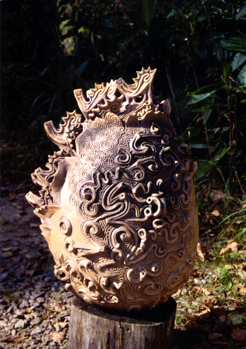
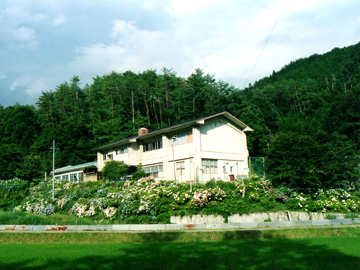
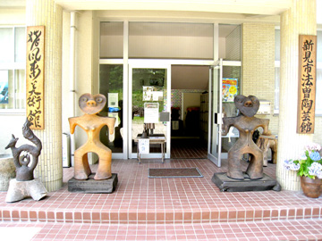

|  | |
| 【土夢華･火焔コスモス（縄文野焼き作品）】 | |
現代芸術シーンに豊饒なる魂のデザインがスパークする。
山あいをぬう風に吹かれてこの地に降り立ち、美術館の作品に出会う時――
法曽の自然や大宇宙に感応し響き合う、力強い生命のエネルギーを感じることでしょう。
日本を代表する縄文造形家･猪風来は、縄文土器文様を新しい造形法で昇華させ、
大いなる森羅万象と精神世界の豊饒なる魂をデザインする。
この美術館は、猪風来の代表的縄文野焼き作品＜生命のシリーズ＞＜情念シリーズ＞
＜森羅万象シリーズ＞＜土夢華シリーズ＞など２００点以上を一堂に展示しております。
またスペインラスター彩の陶オブジェや絵画、草木染め手織り作品なども多数展示。
「法曽焼展示コーナー」にはこの地に伝わる1200年の歴史ある法曽焼の、古窯発掘陶磁器片や
江戸期の水がめと、新たに復活させた法曽焼穴窯作品があります。
陶芸体験学習創作館では陶芸教室が開催されており、幅広い年代の人たちが土ひねりを楽しんでいます。
美術館恒例の「縄文野焼き祭り」は春と秋の年２回開催。
野焼きの炎から生まれるパワーと感動は、現代の陶芸やアートシーンに根源的な衝撃を与えています。
猪風来美術館は地域から世界へ、新たな文化の創造と発信をし続ける美術館です。
旧法曽小学校跡地を利用して平成１７年に開館。
|  |  |
| 【美術館外観】 | 【正面玄関】 |